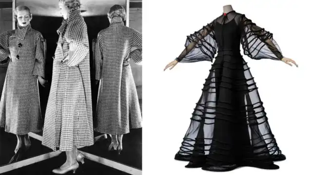
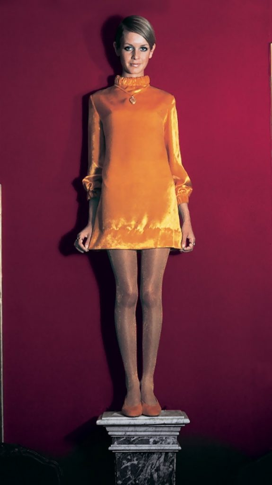
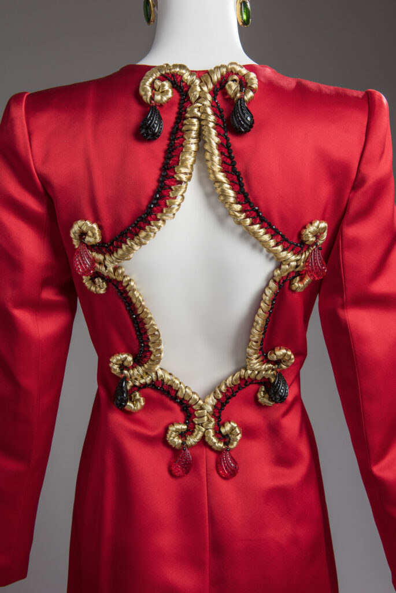
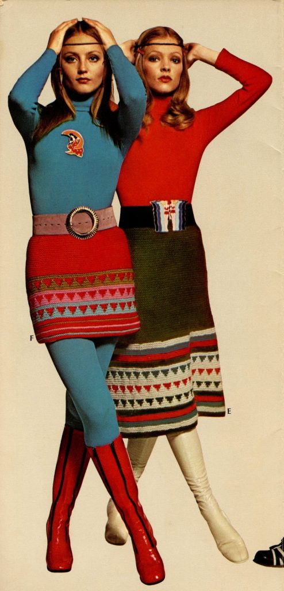
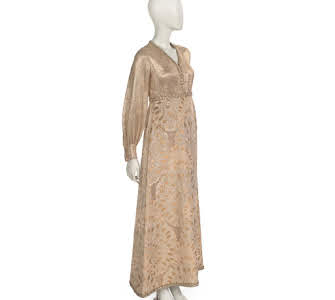
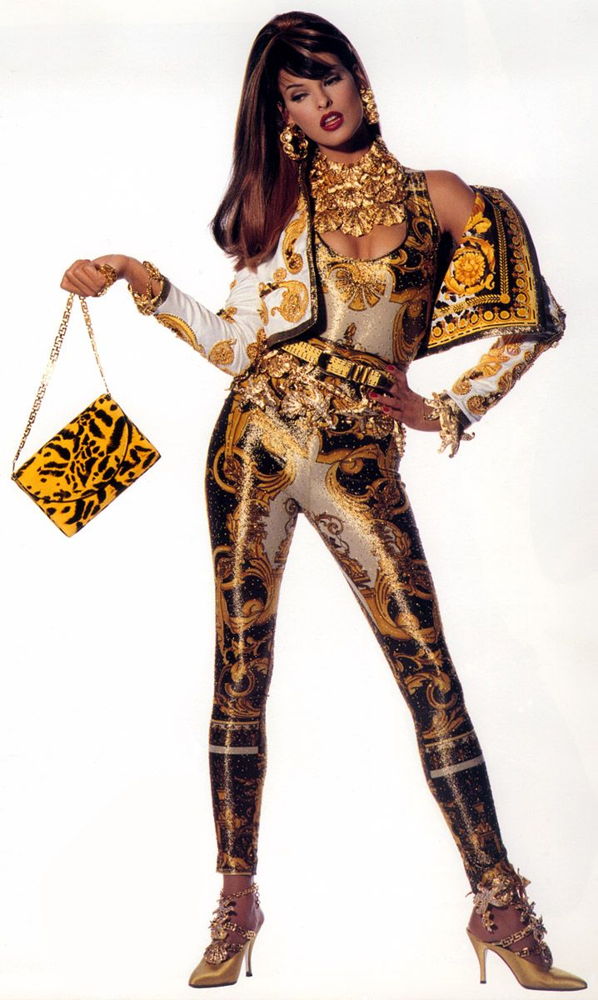
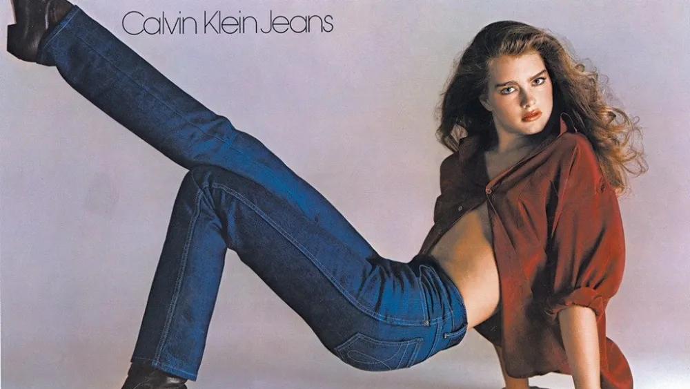
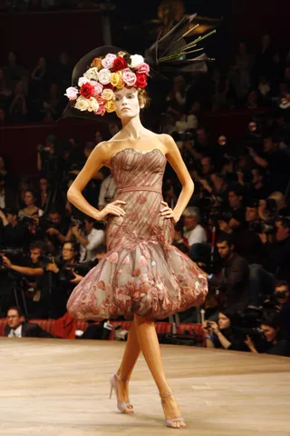
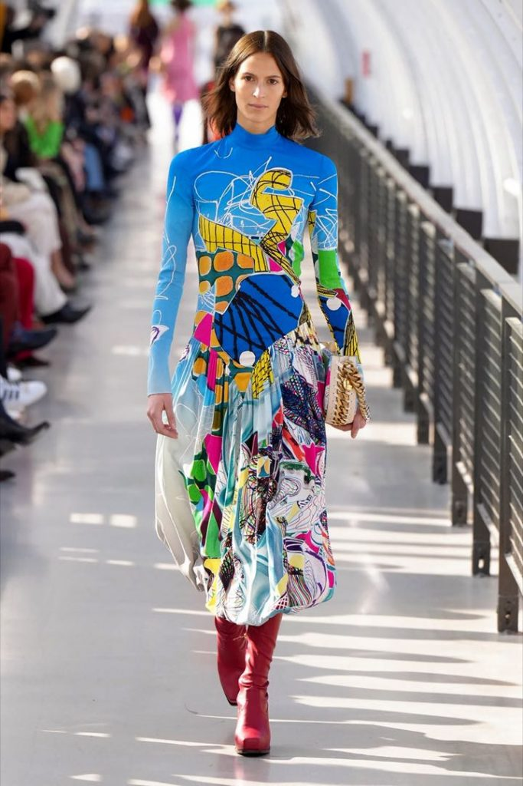

| Década |
Diseñador Principal |
Contribución Destacada |
Representación Gráfica |
| 1910-1920 |
Paul Poiret |
Eliminó el corsé y popularizó los vestidos de inspiración oriental. |
 |
| 1920-1930 |
Coco Chanel |
Introdujo la ropa funcional y popularizó el estilo andrógino. |
 |
| 1930-1940 |
Madeleine Vionnet |
Innovó con el corte al bies y vestidos fluidos. |
 |
| 1940-1950 |
Christian Dior |
Revolucionó la moda con el "New Look". |
 |
| 1950-1960 |
Hubert de Givenchy |
Creó diseños elegantes y atemporales como los vestidos de Audrey Hepburn. |
 |
| 1960-1970 |
Mary Quant |
Popularizó la minifalda y la moda juvenil. |
 |
| 1970-1980 |
Yves Saint Laurent |
Lanzó el esmoquin femenino y exploró la moda unisex. |
 |
| 1980-1990 |
Gianni Versace |
Fusionó la moda con la extravagancia y el glamour. |
 |
| 1990-2000 |
Calvin Klein |
Definió el minimalismo y la estética moderna. |
 |
| 2000-2010 |
Alexander McQueen |
Innovó con diseños teatrales y conceptos futuristas. |
 |
| 2010-2020 |
Stella McCartney |
Defendió la moda sostenible y el lujo ético. |
 |